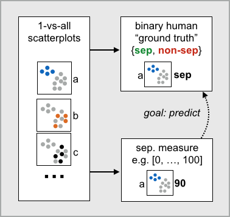

Data-driven Evaluation of Visual Quality Measures

Venue. CGF (2015)
Authors. Michael Sedlmair, Michael Aupetit
Abstract. Visual quality measures seek to algorithmically imitate human judgments of patterns such as class separability, correlation, or outliers. In this paper, we propose a novel data-driven framework for evaluating such measures. The basic idea is to take a large set of visually encoded data, such as scatterplots, with reliable human “ground truth” judgements, and to use this human-labeled data to learn how well a measure would predict human judgements on previously unseen data. Measures can then be evaluated based on predictive performance—an approach that is crucial for generalizing across datasets but has gained little attention so far. To illustrate our framework, we use it to evaluate 15 state-of-the-art class separation measures, using human ground truth data from 828 class separation judgments on color-coded 2D scatterplots.